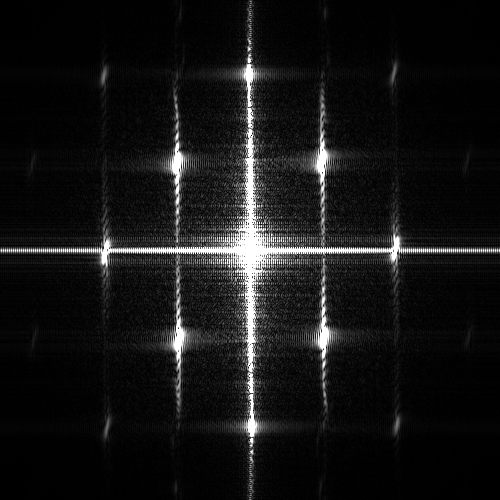

Name: Wenxiang He
Student No: 301417521
Date: 2021/10/09
I have not cheated in any way when doing this assignment, I did it on my own. I may have asked questions about the assignment on Piazza, I know that’s totally fine and even encouraged. I also already know that this class is graded on a curve. I realize that if I cheat and by some miracle not get caught, any increase in my grade will in turn shift the curve and result in lower grades for my classmates. Any undeserved extra grade would come at the cost of all others. That’s horrible! I would never do it.

For HP figure, in spatial domain, moire pattern appears on the bright side of the speaker. In frequncy domain, some high frequency components corrupt as they collide with each other. For LP figure, there are no aliasing observed.
For HP figure, in spatial domain, moire pattern appears on both the bright and dark side of the speaker and it becomes more obvious. In frequncy domain, the high frequency components corrupt heavily and there are only a few high frequency components left. For LP figure, there are still no aliasing observed.
For sub2's kernal, the size is 9 and the standard deviation is 1.5. For sub4's kernal, the size is 11 and the standard deviation is 2. In frequency domain, compare to frequency content without anti-aliasing, the overlapping of high frequency components is lightened


The complex edges on both sides of the speaker(bright and dark) are mostly detected, and the pure black part of the bottom half of the image does not have many stray edges. In the upper part of the image, the edges formed by the grain of wood are also detected. In other versions, either the edges in the dark side of speaker are not detected, or the edges in pure black areas are overdetected


In the optimal version, the edges of the moon and the building are well detected, , while the other versions have more or less the wrong edges in the sky. The optimal version has similarl threholds as the highhigh version.